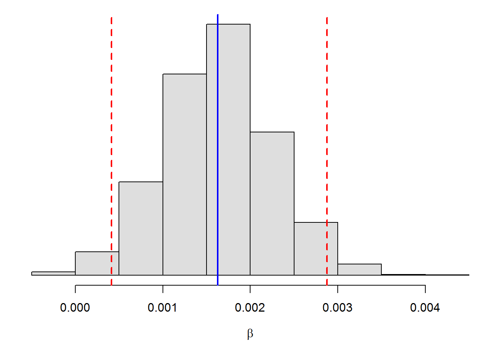

Main effects model
This model is the equivalent of running the following line of code in R:
We start by writing down our likelihood and our model. Here, we are saying that the observed successess and failures are drawn from a Bernoulli density with some probability of success (recall that the Bernoulli is just a special case of the binomial). We evaluate the likelihood for each individual observation and some value of \(p\), or probability of using the Stillwater Branch. This is the only parameter in the Bernoulli distribution, so our likelihood looks like:
\[C_i = Bernoulli(p_i)\]
The probability of using the Stillwater Branch is modeled as a linear function of alpha, beta, and observed flow in the river using the logit link function. Formally, we would write this as:
\[logit(p_i) = \alpha_j\ + \beta_1 \cdot Flow_i\]
or
\[logit(p_i) = \beta_{0j}\ + \beta_1 \cdot X_1\]
Now, we can write the model in BUGS language:
modelstring="
model {
# Likelihood
for(i in 1:nobs){
C[i] ~ dbern(p[i])
logit(p[i]) <- alpha[year[i]] + beta*flow[i]
}
# Priors
for(j in 1:nyears){
alpha[j] ~ dnorm(0, 0.01)
}
beta ~ dnorm(0, 0.01)
}
"
writeLines(modelstring,con="choice.txt")Note that in this case, we have a separate value of alpha for each year, but only a single value of beta. This is akin to the ANCOVA that you have been working with, albeit computationally simpler, and implies that we are only looking at main effects.
Now, we go through our usual steps of packaging the data, specifying initial values, declaring parameters to be monitored, and specifying MCMC settings before we finally run our model:
# Package the data in a list
choice.data = list(
nobs = nrow(choice),
C = choice$path,
year = as.numeric(as.factor(choice$year)),
nyears = length(unique(choice$year)),
flow = choice$flow
)
# Parameters monitored
parameters <- c("alpha", 'beta')
# Initial values
inits <- function(){list(
alpha=rnorm(length(unique(choice$year)),0,1),
beta= rnorm(1, 0, 1)
)}
# MCMC settings
ni <- 7500 # Number of draws from posterior
nt <- 3 # Thinning rate
nb <- 2500 # Number of draws to discard as burn-in
nc <- 3 # Number of chainsFinally, we can run the model.
# Load the R2jags package
library(R2jags)
# Call jags and run the model.
# Note the use of inits=NULL because JAGS is
# being really picky and won't take mine.
choice.model <- jags(choice.data, inits=NULL, parameters, "choice.txt",
n.chains = nc, n.thin = nt, n.iter = ni, n.burnin = nb,
working.directory = getwd())And, print the model results.
print(choice.model, digits=2)
Inference for Bugs model at "choice.txt", fit using jags,
3 chains, each with 7500 iterations (first 2500 discarded), n.thin = 3
n.sims = 5001 iterations saved
mu.vect sd.vect 2.5% 25% 50% 75% 97.5% Rhat n.eff
alpha[1] -2.91 0.79 -4.48 -3.44 -2.89 -2.37 -1.39 1.00 5000
alpha[2] -3.45 0.48 -4.43 -3.77 -3.46 -3.12 -2.53 1.00 5000
alpha[3] -2.66 0.53 -3.72 -3.02 -2.65 -2.31 -1.65 1.00 5000
alpha[4] -2.96 0.34 -3.64 -3.19 -2.96 -2.73 -2.32 1.00 2800
alpha[5] -3.71 0.79 -5.30 -4.24 -3.72 -3.16 -2.21 1.00 5000
alpha[6] -3.69 0.66 -4.99 -4.13 -3.69 -3.24 -2.44 1.00 5000
beta 0.00 0.00 0.00 0.00 0.00 0.00 0.00 1.00 5000
deviance 558.00 5.14 552.71 555.25 557.24 559.98 566.75 1.01 3300
For each parameter, n.eff is a crude measure of effective sample size,
and Rhat is the potential scale reduction factor (at convergence, Rhat=1).
DIC info (using the rule, pD = var(deviance)/2)
pD = 13.2 and DIC = 571.2
DIC is an estimate of expected predictive error (lower deviance is better).This week in lab, you will explore tools for model diagnostics similar to those we did for general linear models. For now, we will just skip to the good stuff that’s not in your textbook this week!
First, let’s plot a histogram for our flow parameter to see if the 95% CRI contains zero.
# Make a graph of the coefficient of flow
# for significance testing
par(mar=c(5,1,1,1))
hist(choice.model$BUGSoutput$sims.list$beta,
col='gray87',
yaxt='n',
ylab='',
xlab=expression(beta),
main=''
)
# Add lines for mean and 95% CRI
abline(v=quantile(choice.model$BUGSoutput$sims.list$beta,
probs=c(0.025,0.5,0.975)),
col=c('red', 'blue', 'red'),
lwd=2,
lty=c(2,1,2)
) 
We see that the 95% CRI, indicated by the dashed red lines, does not contain zero, so we can conclude that there is a significant effect of flow. Now, let’s work on communicating those effect sizes:
# Make some predictions from the model
newflow = seq(0,2000,100)
# Collect the posterior estimates.
# Note that we take the mean of all alphas
# so we can get a marginal effect size for flow.
alpha = apply(choice.model$BUGSoutput$sims.list$alpha,1, mean)
beta = choice.model$BUGSoutput$sims.list$beta
# Predict probability of using
# Stillwater given flow across years
# Make a blank matrix to hold the predictions
preds = matrix(data = NA,
nrow=length(alpha),
ncol=length(newflow)
)
# Now make predictions for each new
# value of flow from each of the
# MCMC samples of alpha and beta.
# These predictions are on the logit scale
for(i in 1:length(alpha)){
for(t in 1:length(newflow)){
preds[i, t] = alpha[i] + beta[i] * newflow[t]
}
}
# Define a function to invert the logit
inv.logit=function(x){exp(x)/(1+exp(x))}
# Convert predictions from logit scale to probability scale
ppreds = apply(preds, c(1,2), inv.logit)
# Plot the predictions
par(mar=c(5,5,1,1))
plot(newflow, ppreds[1, ], ylim=c(0, 1),
yaxt='n',
xlab=expression(paste('Flow (m'^'3','s'^'-1',')')),
ylab='p(Stillwater | flow)',
xlim=c(0,2000), axes = FALSE,
type='l', col=rgb(.7,.7,.7,.05),
main='')
# Plot the posterior predictions
for(i in 1:length(alpha)){
lines(x = newflow, y = ppreds[i, ],
col=rgb(.7,.7,.7,.05), lwd=1)
}
# Calculate the mean and 95% CRIs for posterior predictions
muPred = apply(ppreds, 2, mean)
lowPred = apply(ppreds, 2, quantile, probs=0.025)
upPred = apply(ppreds, 2, quantile, probs=0.975)
# Plot the mean and 95% CRI for predicted probability
lines(newflow, muPred, col='blue', lwd=2, lty=1)
lines(newflow, upPred, col='red', lwd=2, lty=2)
lines(newflow, lowPred, col='red', lwd=2, lty=2)
axis(1, pos=0, at=seq(0,2000,250), labels=seq(0,2000,250))
axis(2, pos=0, las=2)
Hopefully the power of these tools is starting to become evident as we broaden them to include more datatypes. We will continue to explore GLMs next week, and will extend this framework to include models for counts (of stuff or events) and to deal with overdispersed and zero-inflated counts.